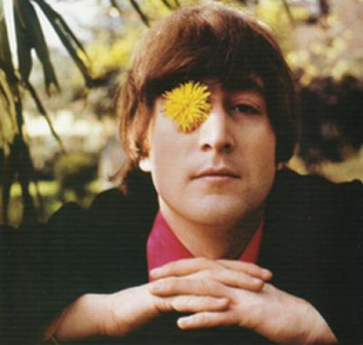

John Lennon
John Lennon a fost unul dintre membrii fondatori ai trupei The Beatles.
Cea mai cunoscută contribuție muzicală a lui John Lennon în cadrul trupei a fost compoziția "Imagine".
Viziunea sa artistică și mesajele politice exprimate în versurile sale au adus o dimensiune profundă muzicii The Beatles.
John Lennon a fost una dintre cele mai puternice voci și chitariști din formație.
Împreună cu Paul McCartney, a fost unul dintre principalii compozitori ai trupei The Beatles.
Personalitatea sa carismatică și umorul său distinctiv au adăugat farmec și carismă în prestațiile live ale formației.
John Lennon a fost liderul și principalul promotor al revoluției psihedelice din anii '60, alături de ceilalți membri ai trupei.
Colaborarea sa strânsă cu McCartney a dus la unele dintre cele mai mari hituri ale formației, precum "All You Need Is Love" și "Strawberry Fields Forever".
John Lennon a jucat un rol important în transformarea The Beatles de la o trupă de muzică pop într-o forță creatoare și experimentală.
Trăsăturile distinctive ale vocii și stilului său muzical l-au făcut pe John Lennon unul dintre cei mai influenți muzicieni ai generației sale și unul dintre membrii iconici ai trupei The Beatles.